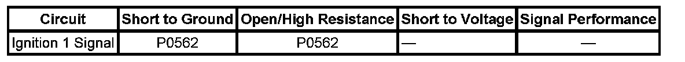

Engine and Fuel Controls
DTC P0562
DTC DESCRIPTOR
DTC P0562
System Voltage Low
DIAGNOSTIC FAULT INFORMATION

Perform the Diagnostic System Check - Vehicle prior to using this diagnostic procedure. Initial Inspection and Diagnostic Overview
CIRCUIT/SYSTEM DESCRIPTION
The engine control module (ECM) monitors the system voltage to ensure that the voltage stays within the proper range. Damage to components, and incorrect data may occur when the voltage is out of range.
CONDITIONS FOR RUNNING THE DTC
- The vehicle speed is above 8 km/h (5 mph).
- The system voltage is between 9.5-18 volts.
CONDITIONS FOR SETTING THE DTC
The ECM detects a system voltage below 10 volts for 5 seconds.
ACTION TAKEN WHEN THE DTC SETS
- The ECM will command the charge indicator and or warning message to be illuminated on the instrument panel cluster (IPC) and the driver information center (DIC), if equipped.
- The ECM will not illuminate the malfunction indicator lamp (MIL).
- The ECM will store conditions, which were present when the DTC set as Fail Records data only.
CONDITIONS FOR CLEARING THE DTC
- The ECM will command the message OFF after one trip in which the diagnostic test has been run and passed.
- The history DTC will clear after 40 consecutive warm-up cycles have occurred without a malfunction.
CIRCUIT/SYSTEM VERIFICATION
With the scan tool installed, ignition ON and the engine OFF, observe the Ignition 1 Signal parameter in the ECM data list. The Ignition 1 Signal parameter should read 10.5 volts or greater.
CIRCUIT/SYSTEM TESTING
1. Measure the voltage at the battery terminals and compare it with the Ignition 1 Signal parameter in the ECM data list. Verify that battery and Ignition 1 signal readings do not differ more than 1 volt.
- If greater than 1 volt test the Ignition 1, ground circuits of the ECM for open/high resistance or replace the ECM.
2. Go to Charging System Test.
REPAIR INSTRUCTIONS
Perform the Diagnostic Repair Verification after completing the diagnostic procedure. Verification Tests
Control Module References for ECM replacement, setup, and programming. Programming and Relearning